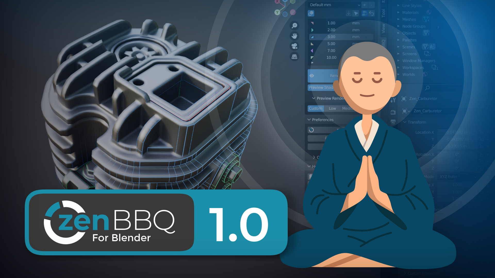
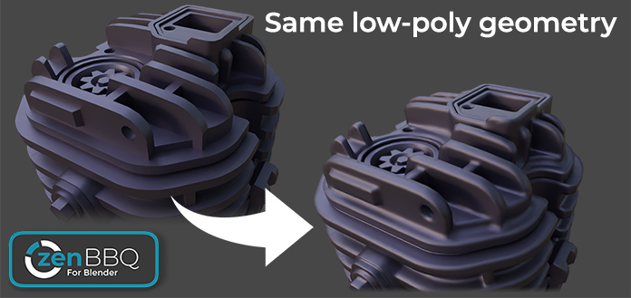
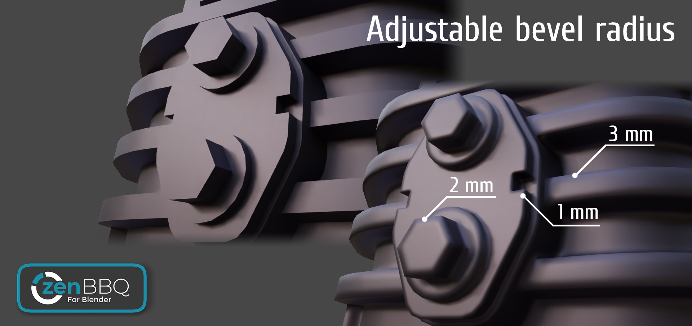
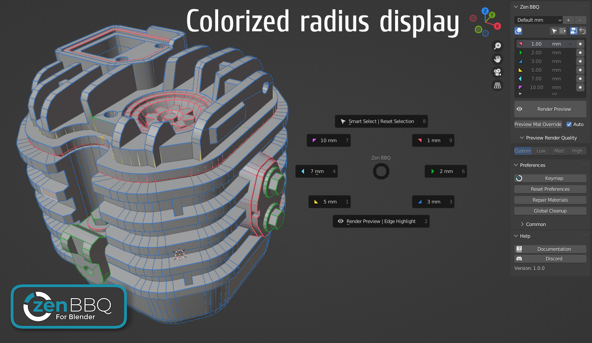

Zen BBQ 1.0 for Blender
Quick Start

Introduction
Zen BBQ is an add-on for creating, adjusting and visualizing Bevels in a couple of clicks! Are you tired of preparing geometry for the Subd or Bevel modifiers? Look no further!
Application area
- Visualization. Bevels catch light and help the eye to define object shapes better. Make your models more realistic and appealing without changing geometry!
- Concept Art. Design awesome objects easily! Just stick Mesh Elements into each other, get smooth transitions and create cool shapes. Special thanks to Tor Frick!
- Game Development. Don’t forget that BBQ Bevels can be baked into Normal Maps for GameDev models. Save hours of your time without cutting support loops for your High-poly model!
Main Features
- Full control over Bevel Shader Node in Cycles. Set Values for the entire model or for each Edge and Vertex individually.
- The whole range of Measurement Units. Set Bevel Radius in MM, CM, M, KM, IN, FT etc.
- Custom Preset Groups. Use existing Bevel Preset Groups with different Units or create your own.
- Friendly to your Materials. Zen BBQ stores its Values in the mesh attributes and embeds into your Materials in a non-destructive way.
- Smart Render Preview System. Preview Bevels in one click!
- Viewport Display System. Visually control each Bevel Preset by color in Viewport.
- Intuitive UI with multifunctional Main and Pie menus.
- Quick Support on the Discord channel.
Zen BBQ - Build Bevels Quickly!




Enjoy this experience with us!